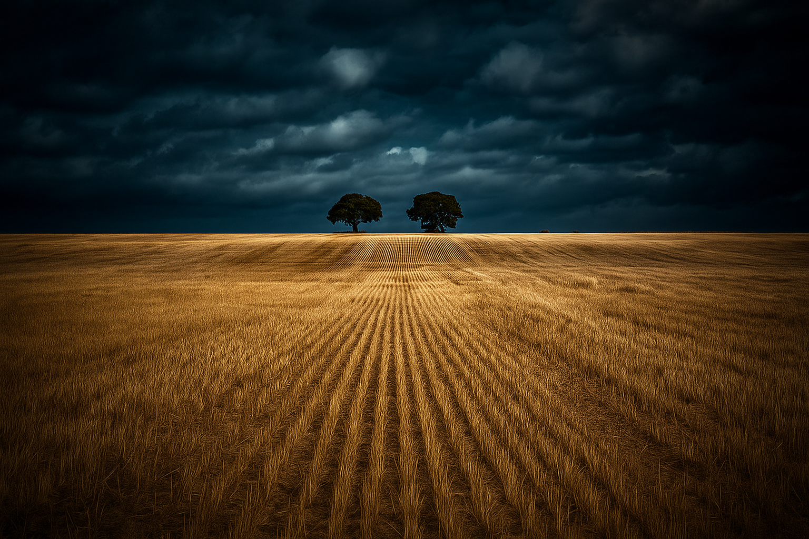

Introducción

Extremadura está experimentando ya los efectos del cambio climático:
aumento de temperaturas medias, mayor frecuencia e intensidad de olas de calor, y cambios en los patrones de precipitación que aumentan la probabilidad de sequías prolongadas. Estas tendencias son coherentes con las proyecciones climáticas regionales que indican temperaturas crecientes y reducción de precipitaciones en varias zonas de la comunidad. AEMETCausas en Extremadura
- Emisiones asociadas al uso de combustibles fósiles y actividades productivas
- Agricultura y ganadería intensiva
- Deforestación y pérdida de dehesas
- Uso de energías no renovables
Aunque Extremadura ha crecido en generación renovable, las actividades económicas (transporte, industria, uso de energía fósil) y la demanda energética siguen contribuyendo a las emisiones netas de GEI.
La agricultura y la ganadería intensiva generan emisiones (metano, óxido nitroso) y presionan sobre recursos hídricos, incrementando la vulnerabilidad regional ante sequías. Estudios sobre la agricultura extremeña proyectan impactos significativos en cultivos ante escenarios futuros.
La alteración de ecosistemas (pérdida de masa forestal, cambios en la gestión de dehesas) reduce la capacidad de captura de carbono y aumenta la susceptibilidad a incendios.
Extremadura, como el resto del sur de Europa, está sometida a cambios climáticos globales (aumento de temperatura media, patrones de circulación atmosférica) que intensifican olas de calor y sequías.